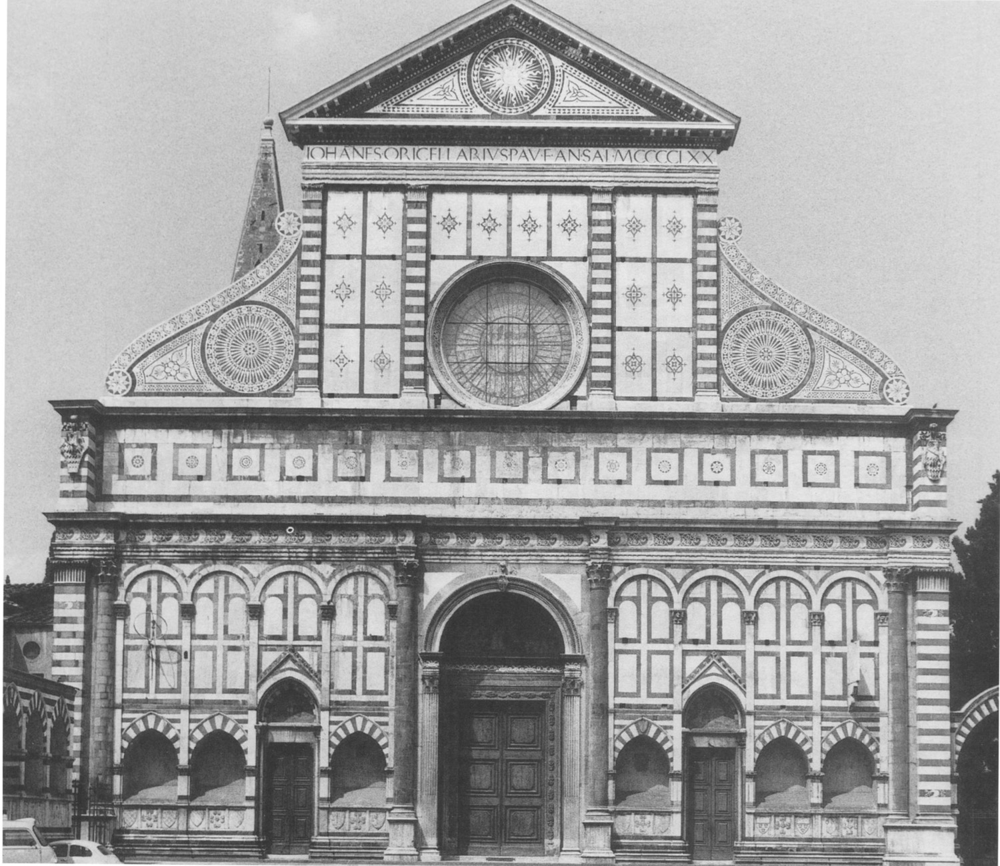
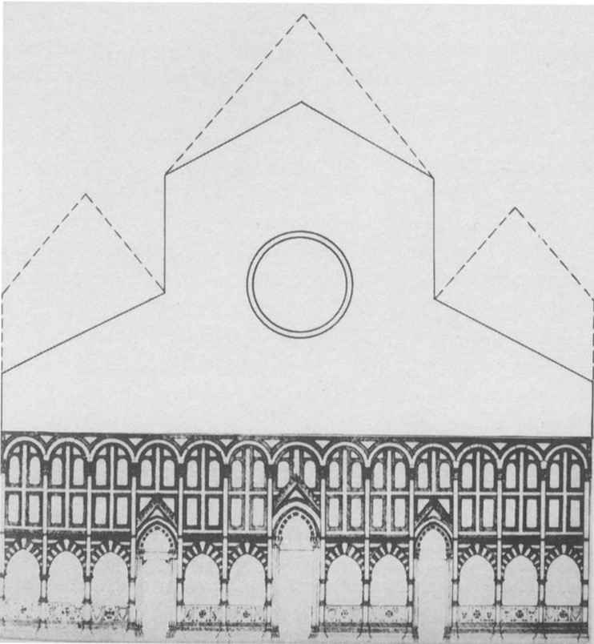
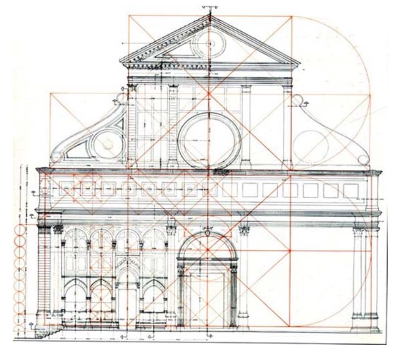
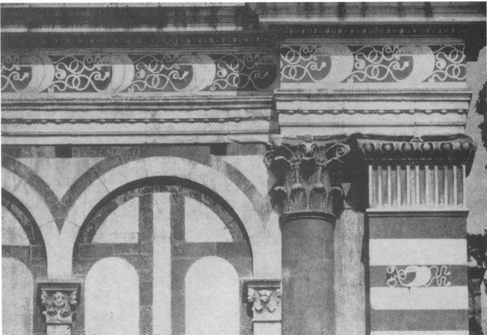

Abstract—This essay explores the impressive design of Santa Maria Novella Facade, a prime example of architecture in Early Modern Europe from 1400 to 1600. The main focus is on the significant impact of Leon Battista Alberti, a renowned architect of that era, and how he incorporated Vitruvian principles to create a harmonious and visually appealing facade. The analysis includes an overview of Santa Maria Novella Church, a detailed examination of the facade’s architectural features, and an exploration of the close connection between Alberti’s design philosophy and the timeless principles of Vitruvius. By delving into the layers of influence and innovation, this paper aims to shed light on the importance of Santa Maria Novella Facade as a reflection of changing theories and histories in architecture during the Early Modern period.
Keywords: Vitruvius, Santa Maria Novella, Leon Battista Alberti
1 Introduction
The time between the 15th and 17th centuries in Europe, called the Early Modern period, saw a special coming together of art, intellect, and cultural revival known as the Renaissance. During this time, classical ideas were brought back to life, and visionary architects played a key role in transforming the way buildings were designed. Among the many impressive structures of this period, the Santa Maria Novella Church in Florence is a shining example of architectural excellence. Its facade is a clear demonstration of the creative design principles that defined this era.
1.1 Revealing Santa Maria Novella Facade
At the center of this exploration is the Santa Maria Novella Facade, a remarkable architectural masterpiece that captures the essence of the Early Modern period. This paper aims to uncover the details of this facade, tracing its origins from the creative mind of Leon Battista Alberti, a versatile genius whose impact extended into architecture, philosophy, and the arts. Built between 1400 and 1600, the Santa Maria Novella Facade serves as a window through which we can explore the merging of architectural theories, artistic expression, and the lasting principles of Vitruvius.
1.2 Purpose and Background
This paper aims to explore the intricate details of the Santa Maria Novella Facade, uncovering the design principles that crafted its balanced appearance. By looking at how Alberti’s ideas and Vitruvius’ classical concepts interact, we want to reveal why this facade is important in the broader scope of Early Modern European architecture. As we undertake this journey, we hope to comprehend not just the visible results of Alberti’s brilliance but also the intellectual influences that shaped his design decisions.
1.3 Why Santa Maria Novella Facade?
I chose to focus on the Santa Maria Novella Facade for its importance in both time and architectural thinking. And, of course, I’ve been there is the most important reason to pick Santa Maria Novella as the topic of our paper. Built between 1400 and 1600, the facade represents the changes in architectural theories during this crucial period. Additionally, being credited to Leon Battista Alberti, a key figure in the Renaissance, links the facade to a rich blend of intellectual and artistic endeavors. By selecting Santa Maria Novella Facade for our study, we aim to uncover not only the physical attractiveness of the structure but also the intellectual influences behind its creation. This provides a nuanced understanding of the theories and histories that shaped Early Modern European architecture.

2 Leon Battista Alberti, the Designer
2.1 Background and Early Life
Leon Battista Alberti, a versatile individual of the Renaissance, went beyond the limits of architecture, philosophy, and the arts. Born in 1404 in Genoa, Italy, Alberti’s early life was filled with scholarly pursuits, influenced by the growing intellectual atmosphere of the Italian Renaissance. His strong desire for learning drove him to explore different subjects, from mathematics to literature, forming the basis for a well-rounded perspective that would later show in his architectural creations.
2.2 Architectural Talent
Alberti’s journey in architecture began as he deeply engaged with the study of classical texts, especially Vitruvius, which played a vital role in shaping his design principles. His architectural success reached new heights with the creation of the Rucellai Palace in Florence(Hatfield 2004), a building that illustrated his innovative approach by blending classical elements with modern sensibilities.
However, a pivotal moment in Alberti’s career occurred when he participated in designing the Santa Maria Novella Facade. This architectural wonder not only demonstrated his technical skills but also marked a significant change in Renaissance architecture. Alberti’s impact went beyond constructing buildings; he formulated an architectural theory that aligned with the humanist ideals of the time.
2.3 Humanism and Architectural Ideas
Alberti’s ideas about architecture, explained in his book “De re aedificatoria” which he composed the first first architectural of the Renaissance between 1443 and 1452 in Rome(Lehmann 1988). highlighted the human-centered principles of proportion, harmony, and balance. He thought that architectural beauty should reflect the harmony observed in nature, leaving a lasting influence on Renaissance architecture. Alberti’s book, often seen as the first modern guide on architecture, not only organized architectural principles but also raised the architect’s role to that of a knowledgeable person, adding to the intellectual standing of the profession.
2.4 Heritage and Influence
The influence of Leon Battista Alberti goes beyond the buildings he created. He shaped the classical revival that defined the Renaissance, leaving a lasting impact on future generations of architects. As a humanist architect, Alberti connected the past with the present, making a lasting mark on the world of architecture. Through his writings and designs, Alberti’s intellectual legacy became an integral part of Renaissance thinking, highlighting the close connection between architecture and the broader cultural context of that time. In the context of Early Modern Europe, Alberti’s contributions make him a significant figure whose ideas and innovations continue to echo through the halls of architectural history.
3 Overview of Santa Maria Novella Church
3.1 Historical Background
Situated in the heart of Florence, Italy, the Santa Maria Novella Church is a symbol of the diverse blend of art, culture, and spirituality during the Renaissance. Its story dates back to the 13th century when the Dominican Order decided to build a new church on this location(Roy 1997). Construction started in 1279, and throughout the years, the church underwent changes, expansions, and enhancements that mirrored the changing artistic and religious tastes of the period. This church also has a unique place in Florentine history, serving as a central hub for Dominican friars and a key location for religious ceremonies and artistic support.
3.2 Architectural Importance
While the entire Santa Maria Novella Church showcases remarkable Gothic and Renaissance architecture, it’s the facade that truly captivates admirers. The facade, with its detailed design and classical proportions, serves as the welcoming face of the church, making a strong visual impact on worshippers and visitors alike.

3.2.1 Style Elements
The facade skillfully combines Gothic and Renaissance features, marking the shift between these architectural styles. Elaborate tracery and pointed arches, characteristic of Gothic architecture, coexist with classical columns and pediments inspired by ancient Roman and Greek styles. This blending not only reflects the diverse influences of the Renaissance but also mirrors the broader cultural exchange between the medieval and modern worlds.
3.2.2 Alberti’s Influence
The role of Leon Battista Alberti in the development of the Santa Maria Novella Church is most pronounced in its facade. He was commissioned by Giovanni di Paolo Rucellai to complete the facade, beginning work on the church in 1458(Lehmann 1988). Alberti’s humanistic principles of proportion and harmony find expression in the balanced composition of the facade. The use of classical orders, such as Corinthian columns, reflects Alberti’s reverence for classical antiquity, while the careful attention to mathematical proportions demonstrates his commitment to architectural beauty grounded in rationality.
3.3 Facade within the Church Structure
Beyond just looking beautiful, the Santa Maria Novella Facade is really important for how people experience the space inside the church. It’s the first thing you see when you enter, setting the stage for all the religious and artistic wonders inside. The design, with a main entrance in the middle surrounded by columns and topped with a triangle shape, makes you focus on what’s important inside.
3.3.1 Meaning and Story
The facade isn’t just pretty decorations, it tells a story in stone, sharing theological and symbolic messages. Sculptures on it, like panels and statues, show scenes from the Bible and the lives of saints, encouraging worshippers to think about these stories as they enter the sacred space. This mix of art and architecture shows how the Renaissance saw spiritual and aesthetic parts coming together.
3.3.2 Connection with Other Buildings
Also, the facade talks with the nearby buildings, like the cloisters and the inside of the church. Alberti, with his smart design, makes sure the facade fits well into the larger design, adding to the overall harmony of the Santa Maria Novella area.
In short, the Santa Maria Novella Church, with its rich history and beautiful architecture, gives us a great place to explore the importance of the facade. The facade, being the face of this old place, captures the Renaissance spirit, bringing together different architectural styles and representing the ideas of the time. As we look deeper into the details of the facade, we discover not only a visually pleasing display of artistic skill but also a deep story woven into the fabric of Early Modern European history and culture.
4 Architectural Features of Santa Maria Novella Facade
4.1 Sculptural Collection
Right in the middle of the Santa Maria Novella Facade,there’s a carefully made main entrance. It’s decorated with many sculptures that tell stories from the Bible and important theological ideas. On each side of the door, there are fancy columns with special tops called Corinthian capitals, showing how Alberti loved classical design. The stories on the door, sculpted by Giovanni Rucellai, show moments from the lives of saints, highlighting the spiritual journey of believers.
4.2 Decorative EFeatures
4.2.1 Traditional Patterns
Alberti’s strong love for ancient classical styles is clear in the decorative parts of the facade(Lehmann 1988). Fancy bands, tooth-like moldings, and classical edges add to the facade’s beauty, taking inspiration from Roman and Greek architecture. The detailed designs not only show off the skill of the craftsmen but also bring back classical beauty, connecting the church with the ideas of the Renaissance.
4.2.2 Geometric Precision
The decorative details on the facade aren’t just there to look good， they follow careful geometric patterns. Alberti, being good at math and theory, used mathematical rules and proportions in the design, following the ideas from Vitruvius about harmony and balance. This careful attention to shapes not only highlights the Renaissance interest in math beauty but also lifts the facade from just being a structure to a symbol of great architectural skill.
4.3 Structural Composition
4.3.1 Rows of Columns
The use of classical rows of columns, especially the Corinthian columns that support the triangle-shaped top, creates a clear order and makes the facade look impressively large. The columns, with their ridged shafts and acanthus leaf tops, add to the overall height of the design, recalling the proportions seen in old Roman temples(Gangwar 2017). This classical style, smoothly blended into the facade, represents a reconnection with the greatness of ancient times and the pursuit of excellent architecture.
4.3.2 Triangle Top and Horizontal Structure
The triangle-shaped top at the top of the facade stands out, reaching upward like a pointy peak. The flat part below it, decorated with sculpted reliefs, supports the story told by the facade. The triangle top, a classic feature, brings a feeling of completeness and balance, matching Alberti’s focus on architectural harmony inspired by classical examples.
4.4 Renaissance Context
In the time of the Renaissance, the architectural elements of the Santa Maria Novella Facade mark a significant shift from the medieval style to a celebration of classical design. The use of classical patterns and careful mathematical details reflects the Renaissance humanist ideas, aiming to bring back the wisdom of ancient times. Additionally, the facade is a place where artists and architects worked together, showing the Renaissance spirit of creative collaboration.
As a representation of Leon Battista Alberti’s architectural ideas, the Santa Maria Novella Facade is a lasting symbol of the Renaissance pursuit of beauty, balance, and thoughtful thinking. Its rich sculptures, stylish decorations, and strong structure make it more than just a facade. It becomes a visual masterpiece that echoes the dreams and goals of a changing time in European history.
5 Expression of Alberti’s Design Philosophy in Santa Maria Novella Facade
Leon Battista Alberti, a brilliant figure of the Renaissance, made a lasting impact on how we think about and build structures. His ideas on design, explained in writings like “De re aedificatoria”, come to life in the Santa Maria Novella Facade. This part explores how Alberti’s theories and the actual design of the facade work together in a detailed way.
5.1 Humanistic Proportions and Harmony
Alberti’s commitment to humanistic ideals is prominently evident in the proportions and harmony of the Santa Maria Novella Facade. In “De re aedificatoria”, Alberti emphasizes the use of harmonic proportions derived from the human body, suggesting that a well-designed building should mirror the balanced proportions found in nature.
He explain the harmony of proportion could be achieved in such a manner “nothing could be added, diminished or altered expect for the worse”. It simply means that one should go for perfection in the system of proportion; one should explore many options before finalizing the best one. He created a system of architecture based on the ratios 2:1 and 3:1 suggested by the Timaeus of Plato in ancient Greece and based on musical scale. He reasoned that “what is pleasing to the ear should be pleasing to the eye.” He has applied the system of proportion for designing of the two buildings namely Santa Maria Novella in Florence and San Sebastiani in Mantua, Italy(Gangwar 2017).
The facade, with its carefully orchestrated arrangement of pilasters, columns, and decorative elements, becomes a testament to Alberti’s belief in the intrinsic beauty of proportional relationships.

5.1.1 Vitruvian Influence
Alberti’s reliance on Vitruvius as a foundational text is discernible in the facade’s adherence to the classical orders. Vitruvius’ emphasis on the three qualities of firmitas (strength), utilitas (functionality), and venustas (beauty) finds resonance in Alberti’s meticulous attention to structural integrity, functional utility, and aesthetic pleasure.
Theory of venustas is very complicated and as per these principles timeless notion of beauty could be learnt from “truth of nature”, nature’s designs are based on universal laws of proportion and symmetry. He has believed that human body’s proportions are perfect created by nature and these could be used by an architect for designing of building(Gangwar 2017).
The facade, therefore, becomes a harmonious composition that embodies the Vitruvian triad, showcasing Alberti’s commitment to the enduring principles of ancient architecture.
5.2 Classical Vocabulary and Symbols
5.2.1 Columns and Wall Decorations
Using a lot of classical columns, especially the Corinthian kind, gives the facade a feeling of importance and classic beauty. Alberti didn’t just pick these styles because they look nice, it was a careful choice to remind people of the greatness of ancient Rome and Greece. The columns, with their slim parts and fancy tops, act like strong points that add to the up-and-down pattern of the facade.

5.2.2 Triangle Top with Special Meaning
Alberti’s love for symbols is shown in the triangle-shaped top that finishes the facade. This triangle, a classic feature from old temple designs, represents a balanced finish to the whole structure. The top part, pointing upward, makes people look higher and suggests a connection between what’s on earth and what’s divine.
5.3 Mathematical Precision and Rational Beauty
5.3.1 Application of Mathematical Ratios
Alberti, being good at math and thinking math is important, shows this in the facade’s exact shapes. The careful arrangement of building parts, like how far apart pilasters are and the size of the main entrance, follows Alberti’s idea that architecture should follow strict math rules. The facade becomes an example of well-organized beauty, where math order and pleasing looks come together.
5.3.2 Blending Good Looks and Useful Design
Alberti’s focus on making things both beautiful and useful is seen in the Santa Maria Novella Facade. The facade looks nice as a composition, but it also does its job as the entrance to the church. Bringing together beauty and usefulness fits with Alberti’s way of thinking, where architecture isn’t just about structure but is also a way to express culture and make human experiences better.
5.4 Blend of Arts and Sciences
Alberti’s idea that architecture should mix arts and sciences is clearly shown in the Santa Maria Novella Facade. Architects, sculptors, and craftsmen working together match Alberti’s view that making buildings involves many different skills. The sculptures, decorations, and building features all come together to create a united whole, representing the Renaissance idea of combining different arts into one integrated approach.
5.5 Conclusion
To sum up, the Santa Maria Novella Facade is a real example of Leon Battista Alberti’s way of designing things. His ideas, which are deeply connected to humanism, bringing back classical styles, and using math well, can be seen in how well the facade is put together. When we look at the facade using Alberti’s ideas from his writings, we discover not only how good it looks but also the important ideas that guided one of the top architects of the Renaissance. The Santa Maria Novella Facade isn’t just a fantastic building, it’s a real example of Alberti’s lasting impact in both art and thinking.
6 Santa Maria Novella Facade and Vitruvius’ Principles
The Santa Maria Novella Facade stands as a harmonious testament to the enduring influence of Vitruvius’ architectural principles during the Renaissance. In examining the facade through the lens of Vitruvian ideals—firmitas (strength), utilitas (functionality), and venustas (beauty) (Gangwar 2017)—a profound connection emerges, emphasizing the importance of balance, proportion, and appropriateness in architectural design.
6.1 Firmitas: Strength
Vitruvius talked about firmitas, meaning buildings should be strong and solid. This idea is clearly seen in the Santa Maria Novella Facade’s sturdy design. The facade, using classical styles carefully and paying close attention to being strong, follows Vitruvius’ focus on stability and lasting power. The Corinthian columns holding up the triangle top show strength, emphasizing the facade’s commitment to being well-built. Alberti, following Vitruvius closely, turned the idea of firmitas into the very stones of the facade, making sure the structure stands strong and lasting.
6.2 Utilitas: Functionality
Vitruvius also talked about utilitas, which means buildings should be useful. This principle is visible in the Santa Maria Novella Facade, which works both as a pretty entrance and a practical way into the church. The main entrance, with pilasters on each side and sculptures, is not just a nice focal point but also a practical way to get inside. Alberti’s mix of beauty and usefulness matches Vitruvius’ idea that architecture should be a useful art that meets the needs of the people who use it. The facade, with its perfect mix of shape and purpose, shows that utilitas is still important in how buildings are designed.
6.3 Venustas: Beauty
Vitruvius also talked about venustas, which means buildings should be beautifully delightful. This idea is most obvious in the Santa Maria Novella Facade. Alberti’s careful attention to shapes and how things look turns the facade into a stunning sight that captures anyone who sees it. The mix of classical styles, sculptures, and precise shapes makes the facade not only a delight for the eyes but also something that matches the classical beauty Vitruvius admired. In the pursuit of delightful beauty, the Santa Maria Novella Facade becomes a celebration of timeless aesthetic ideals that go beyond changing times and cultures.
6.4 Harmony, Proportion, and Moderation
Vitruvius, in what he wrote, talked a lot about the importance of harmony, proportion, and moderation in architecture. The Santa Maria Novella Facade shows these ideas in action. The way sculptures work together, how columns and pilasters are set up in just the right size, and not putting too much decoration on it all follow Vitruvius’ ideas that never get old. Alberti, who followed Vitruvius closely, made sure the facade followed these ideas, creating a design that feels balanced, symmetrical, and just right.
6.5 Conclusion
To sum up, the Santa Maria Novella Facade is proof that Vitruvius’ ideas are still important in Renaissance architecture. Looking through what Vitruvius said about making things strong, useful, and delightful, the facade becomes a real example of excellent architecture. The link between the Santa Maria Novella Facade and Vitruvius’ ideas shows how timeless these basic ideas are in creating great buildings. As we explore all the small details of the facade, we find a deep conversation between the old wisdom of Vitruvius and the smart thinking of Alberti during the Renaissance. This mix goes beyond time and different cultures, creating something new and powerful.
7 The Relationship Between Alberti, Vitruvius, and Renaissance Architecture
The close connection between Leon Battista Alberti and the ancient Roman architect Vitruvius played a crucial role in shaping Renaissance architecture. Alberti’s profound admiration for Vitruvius and his dedication to bringing back classical ideals formed a strong link that echoed throughout the Renaissance, leaving a lasting impact on architects in the following generations.
7.2 Integration of Classical Ideals
Both Alberti and Vitruvius shared a passionate enthusiasm for classical antiquity and aimed to revive the architectural principles of ancient Rome and Greece. The Santa Maria Novella Facade, stands as a tangible representation of this fusion of classical ideals. The use of classical columns, careful attention to proportions, and inclusion of classical motifs showcase the joint vision of Alberti and Vitruvius in creating architecture that pays tribute to the timeless wisdom of the classical world.
7.3 Influence on Later Architects
The influence of Alberti and Vitruvius on Renaissance architecture had a lasting effect that extended well beyond their lifetimes. Alberti, as both a thinker and a builder, not only shaped the physical structures of his time but also laid the intellectual foundation for future architects. His focus on precise mathematics, balanced proportions inspired by humanism, and the integration of arts and sciences became lasting principles that affected architects like Palladio, Vignola, and even those in the Baroque period.
Vitruvius’ work, “De architectura” became a fundamental guide for architectural education during the Renaissance and continued to wield influence in the centuries that followed. This treatise, widely translated and studied at the time, served as a wellspring of ideas for architects aiming to comprehend and reproduce the magnificence of classical architecture.
7.4 Legacy of a Harmonious Synthesis
The connection among Alberti, Vitruvius, and Renaissance architecture illustrates a harmonious blend of tradition and innovation. Alberti, building upon Vitruvius’ principles, injected fresh vitality into architectural thinking, ushering in a Renaissance that embraced both classical wisdom and humanistic ideals. This dynamic interplay between the ancient and the contemporary not only defined the Renaissance but also set the stage for the development of architectural theory and practice in the centuries that followed.
In essence, the relationship between Alberti and Vitruvius stands as proof of the transformative influence of ideas over time. Their shared dedication to enduring architectural principles not only shaped the Renaissance era but also left behind a lasting legacy that continues to motivate and guide architects in their pursuit of timeless beauty and excellence.
8 Conclusion
n conclusion, the process of crafting this paper has been an enlightening journey, providing me with a thorough understanding of the Santa Maria Novella Facade. Through meticulous exploration, I uncovered the intricate details that reveal the deep-seated connection between the architectural ideologies of Leon Battista Alberti and the ancient Roman architect Vitruvius. This facade, nestled in the vibrant heart of Florence, transcends its physical existence, emerging as a dynamic testament to the intellectual currents that molded the Renaissance and persist in influencing architectural discussions.
Furthermore, this endeavor has been a valuable part of my studies in “Theories and Histories of Architecture in Early Modern Europe 1400–1600.” It has not only enhanced my grasp of architectural principles during this pivotal period but has also been a meaningful contribution to the insights gained in this course. I am immensely grateful to Professor Barbara Arciszewska for her patient and vibrant teachings, which have enabled someone like me with an engineering background and no prior exposure to European architectural culture to develop a preliminary understanding of this fascinating field.